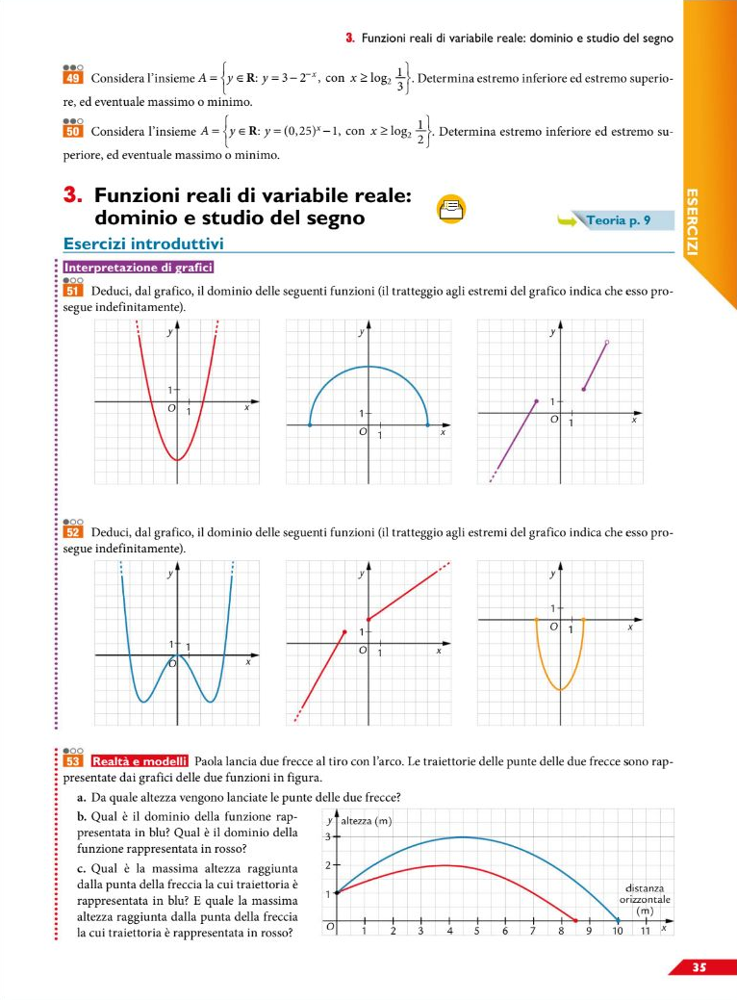
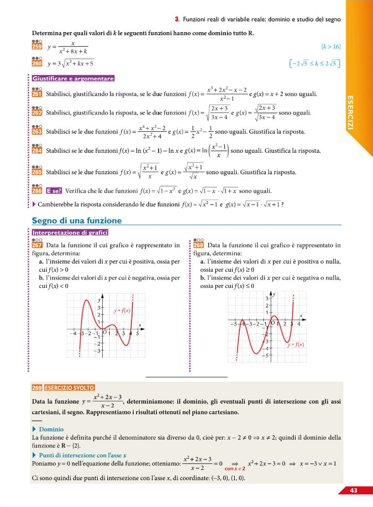
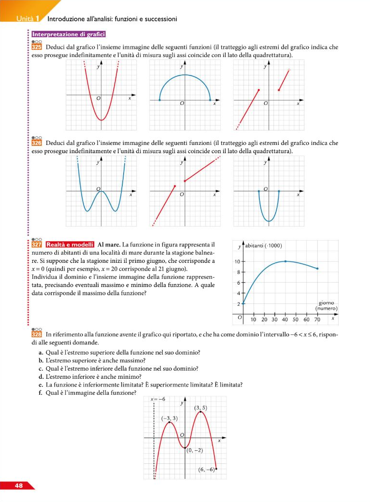
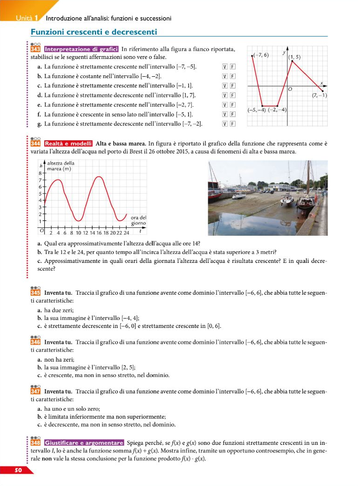
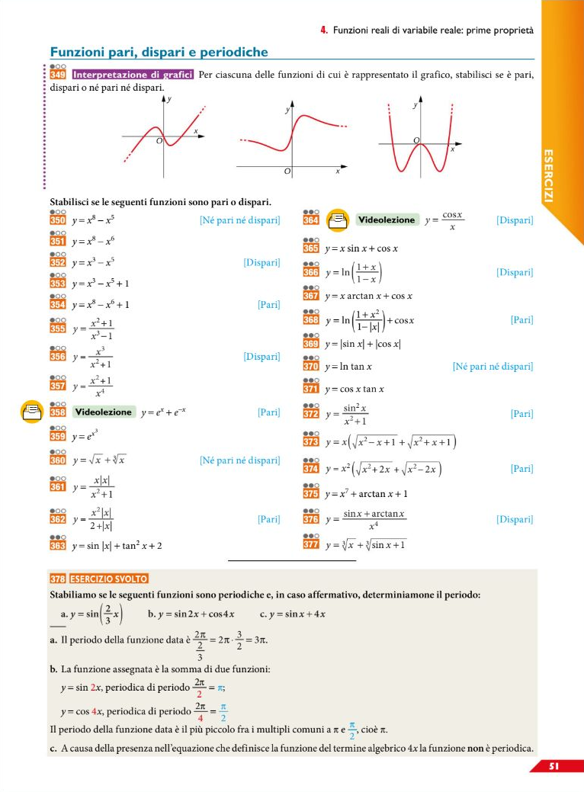
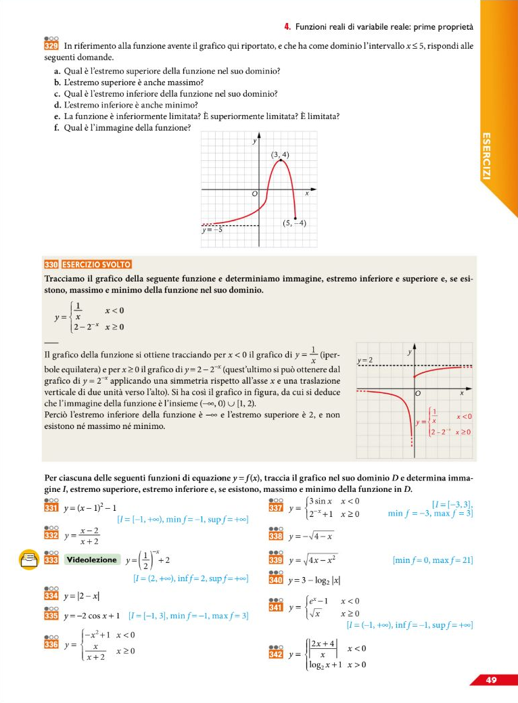
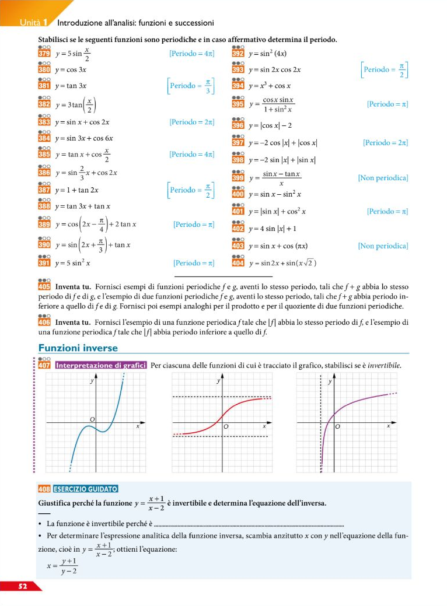
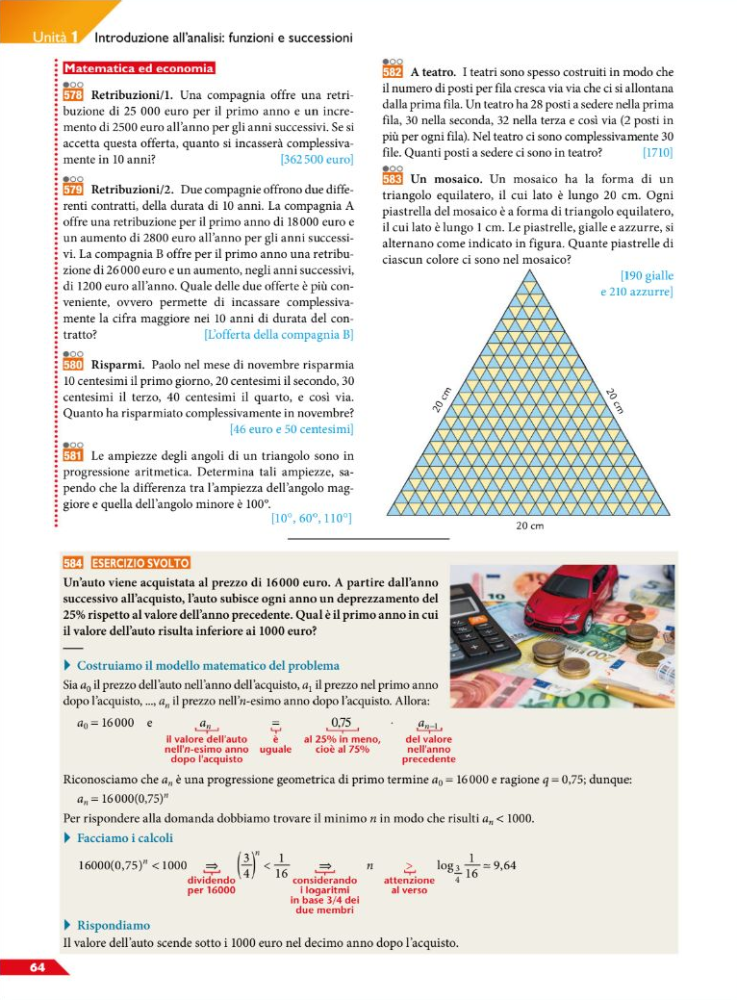

Lezione 1 · pp. 6 e 9–12
Che cosa può entrare?
Funzioni, intervalli e dominio algebrico
Passare dal grafico alla formula e motivare gli estremi inclusi ed esclusi.
LICEO MONTI DI CHIERI · 2026–27 · MATEMATICA
5CLL · Liceo linguistico
Dal grafico alla formula, dalla formula al grafico. UDA 2 · 3 settimane · 6 lezioni.
Quanto lontano arriva un proiettile se cambio l’angolo di lancio? Come trovo la velocità di un corpo in un istante preciso? Come misuro un’area dal contorno curvo? Fra Cinquecento e Seicento, problemi di moto, ottica e misura spinsero i matematici a cercare metodi che valessero per intere famiglie di problemi. I risultati di Newton e Leibniz diedero forma al calcolo infinitesimale. La formulazione rigorosa del limite venne sviluppata in seguito.
Se la velocità iniziale è fissata, a quale inclinazione corrisponde la gittata più lunga? In un modello senza attrito e con partenza e arrivo alla stessa altezza, l’angolo ottimale è 45°. In ottica Fermat usò il tempo di percorrenza per spiegare la rifrazione. Cercare il massimo o il minimo significa confrontare i risultati per tutti gli ingressi ammessi.
La velocità media dipende da un intervallo di tempo. Riducendo quell’intervallo, la pendenza delle secanti può avvicinarsi a quella della tangente. Limite e derivata permettono di dare senso a questo passaggio.
Archimede racchiudeva le misure cercate tra approssimazioni. Keplero immaginava di suddividere il cerchio in triangoli molto sottili. La stessa idea di approssimare e sommare prepara al calcolo dell’area sotto un grafico con l’integrale.
In questa UDA impariamo a descrivere la funzione prima di studiarne il comportamento più in dettaglio. Quali ingressi accetta? Quali valori raggiunge? Dove cresce, cambia segno o può essere invertita? Sono le domande da cui partirà lo studio di funzione.
Per \(s(t)=t^2\), in metri con \(t\) espresso in secondi, tra \(t=1\) e \(t=1+h\) la velocità media vale \(\frac{(1+h)^2-1}{h}=2+h\) m/s, per \(h>0\). Con \(h=1\), \(0{,}1\) e \(0{,}01\) trovi 3, 2,1 e 2,01 m/s. Avvicinando \(h\) a zero il rapporto si avvicina a 2 m/s. Prova a spiegare che cosa accade alla secante quando i due punti si avvicinano.
Tre settimane, due lezioni alla settimana. Porta il libro e il quaderno. Per ogni esercizio trovi la pagina stampata e il numero.
Per partire servono intervalli, scomposizioni, disequazioni elementari e i grafici già visti di parabola, esponenziale e logaritmo.
Lezione 1 · pp. 6 e 9–12
Funzioni, intervalli e dominio algebrico
Passare dal grafico alla formula e motivare gli estremi inclusi ed esclusi.
Lezione 2 · pp. 10–13 e grafici elementari
Dominio trascendente, valore assoluto e uguaglianza
Combinare le condizioni e accorgersi di un punto escluso anche dopo una semplificazione.
Lezione 3 · pp. 13–14
Zeri, intersezioni e segno
Deduci dove si trova la curva e distingui uno zero, un punto escluso e un contatto senza cambio di segno.
Lezione 4 · pp. 14–18
Immagine, monotonia, parità e periodicità
Leggere proprietà dal grafico e giustificare pari o dispari dal dominio e dalla formula.
Lezione 5 · pp. 19–21
Iniettività, inversa e funzione composta
Controllare il numero di controimmagini, invertire nei casi essenziali e rispettare l’ordine di composizione.
Lezione 6 · p. 22 (idea di indice), pp. 27–28 (somma e racconto)
Somma a coppie, allenamento e autoverifica
Riconoscere una somma a passo costante e affrontare in autonomia la prova sulle funzioni.
Sfida · p. 64, n. 583
3′ lettura del metodo di Gauss · 7′ sfida già avviata in classe · 30′ completamento della prova
Leggere e giustificare le proprietà di una funzione da formula e grafico. Alla fine svolgerai tutti gli esercizi della p. 74, dal n. 1 al n. 11.
Settimana 1 · Lezione 1
Passare dal grafico alla formula e motivare gli estremi inclusi ed esclusi.
5′ lancio · 15′ laboratorio · 10′ formalizzazione · 25′ esercizi · 5′ uscita
Due punti sulla stessa verticale possono appartenere al grafico della stessa funzione? E due punti alla stessa altezza?
Sposta la verticale. Prima di muoverla, prevedi per quali ascisse incontrerà le curve. Confronta il punto aperto del secondo grafico con il punto pieno. Traduci le osservazioni in intervalli.
I numeri reali comprendono i razionali e gli irrazionali. Sulla retta reale \([a,b]\) include entrambi gli estremi e \((a,b)\) li esclude. Le scritture \([a,b)\) e \((a,b]\) ne includono uno solo. Accanto a \(+\infty\) e \(-\infty\) si usa sempre la parentesi tonda. \(\cap\) significa «valori in comune», \(\cup\) «valori che stanno in almeno uno dei due insiemi».
Con \(f\colon A\to B\) intendiamo una legge che a ciascun \(x\) di \(A\) associa uno e un solo \(f(x)\) in \(B\). \(A\) è il dominio, \(B\) il codominio. L’immagine è l’insieme delle uscite effettive e può essere più piccolo del codominio. Si parla di funzione reale di variabile reale quando \(A\) e \(B\) sono sottoinsiemi di \(\mathbb R\). Il grafico è formato dalle coppie \((x,f(x))\), con \(x\in A\).
| Famiglia | Esempio | Dominio naturale |
|---|---|---|
| Razionale intera (polinomiale) | \(x^2-3x+2\) | \(\mathbb R\) |
| Razionale fratta | \(\frac{x-2}{x+1}\) | \(\mathbb R\setminus\{-1\}\) |
| Algebrica irrazionale | \(\sqrt{x-2}\) | \([2,+\infty)\) |
| Trascendente (qui logaritmica) | \(\ln(x-2)\) | \((2,+\infty)\) |
Il dominio naturale raccoglie gli ingressi per cui la formula ha significato nei reali. Un problema può imporre ulteriori vincoli, come un tempo non negativo. Con più operazioni si intersecano le condizioni; se una singola condizione produce più intervalli, si usa l’unione di quegli intervalli.
Una funzione associa a ogni elemento del dominio un solo valore nel codominio. Il grafico supera il test della verticale se ciascuna verticale lo incontra in al più un punto. La proiezione del grafico sull’asse x dà il dominio.
Una funzione algebrica può essere razionale (intera o fratta) o irrazionale. Esponenziale, logaritmo e seno sono esempi di funzioni trascendenti. Per trovare il dominio naturale imponi insieme tutte le condizioni.
Prima guarda l’asse x. Poi scrivi due vincoli brevi. Infine traducili in intervalli. Il simbolo ≥ si legge «maggiore o uguale».
Trova il dominio di \(\sqrt{x+2}/(x-1)\).
Per \(1/\sqrt{4-x}+\sqrt[3]{x+1}\) occorre \(4-x>0\), dunque \(D=(-\infty,4)\). La radice cubica accetta anche radicandi negativi.

12′ teoria e mappa · 15′ esercizi base · 13′ sfida
p. 38, n. 100 · Trova il dominio di √((x²−4)/(x+3)). Motiva separatamente il ruolo di −3, −2 e 2.
Scomponi x²−4 e ordina sulla retta −3, −2, 2. Per la radice serve il segno dell’intera frazione.
Nel n. 81 a p. 37 quali operazioni possono impedire il calcolo?
Scrivi separatamente le condizioni su 4x+1 e su x, poi prendi i valori comuni.
p. 74 · Verso la prova, n. 1a–b e nn. 2–4.
Settimana 1 · Lezione 2
Combinare le condizioni e accorgersi di un punto escluso anche dopo una semplificazione.
5′ lancio · 15′ laboratorio · 10′ formalizzazione · 25′ esercizi · 5′ uscita
Se una frazione si semplifica fino a diventare una retta, il punto cancellato torna nel grafico?
Confronta la retta con la funzione semplificabile. Metti il cursore sul punto critico e prova anche un valore accanto. Confronta i confini dei domini di logaritmo e radice. Nel modello con il valore assoluto, prevedi quale tratto della curva tratteggiata si riflette.
Per \(a^{u(x)}\) con base costante \(a>0\), controlla che l’esponente \(u(x)\) sia definito. Per \(\log_a u(x)\) servono \(a>0\), \(a\ne1\) e \(u(x)>0\). Se il logaritmo è anche un fattore del denominatore, imponi \(u(x)\ne1\). Ricorda che \(\ln=\log_e\).
Come promemoria della tabella di p. 12, seno e coseno accettano ogni argomento reale definito. Per la tangente si escludono gli argomenti \(\pi/2+k\pi\), con \(k\in\mathbb Z\). Arcoseno e arcocoseno richiedono invece un argomento in \([-1,1]\).
\(|u|\) vale \(u\) per \(u\ge0\) e \(-u\) per \(u<0\). In \(g(x)=|f(x)|\) gli ingressi rimangono quelli di \(f\). In \(g(x)=f(|x|)\) devi verificare che \(|x|\) sia nel dominio di \(f\). Per leggere una traslazione, in \(f(x-h)+k\) il punto \((x,f(x))\) si sposta in \((x+h,f(x)+k)\).
Nel criterio del libro servono lo stesso dominio e uscite uguali per ogni ingresso comune. Per esempio \(\ln(x^2)=2\ln|x|\) vale per \(x\ne0\), mentre \(2\ln x\) è definito solo per \(x>0\). La condizione va controllata sulle formule di partenza.
Il valore assoluto restituisce la distanza da zero. Se al suo interno compare una funzione, il dominio resta quello della funzione interna. In \(y=|f(x)|\) le parti sotto l’asse x si riflettono sopra. In \(y=f(|x|)\) la parte con x ≥ 0 si riflette rispetto all’asse y, per gli ingressi ammessi.
Scrivi ogni condizione su una riga. «Argomento del logaritmo» è tutto ciò che compare tra le sue parentesi.
Determina il dominio di \(1/\ln(x^2-3)\).
In \((x^2-1)/(x-1)\) escludi 1 prima di semplificare. Il grafico coincide con quello di \(x+1\) dove entrambe sono definite, con un punto vuoto in (1,2).
12′ teoria · 15′ esercizi base · 13′ sfida
p. 39, n. 147 · Trova il dominio di ln((x²−4x)/(3−x)) e spiega perché nessuno fra 0, 3 e 4 può appartenergli.
Scomponi il numeratore in x(x−4), poi chiedi quando il quoziente è strettamente positivo.
Nel n. 261 a p. 43 individua i valori per cui il denominatore si annulla.
Fattorizza il numeratore raccogliendo x²−1 dopo aver scritto il dominio.
p. 74 · Verso la prova, nn. 5–7 e 11a.
Settimana 2 · Lezione 3
Deduci dove si trova la curva e distingui uno zero, un punto escluso e un contatto senza cambio di segno.
5′ lancio · 15′ laboratorio · 10′ formalizzazione · 25′ esercizi · 5′ uscita
Se una curva tocca l’asse x, passa sempre dall’altra parte?
Prevedi il segno tra i punti critici. Usa il cursore e poi confronta grafico e tabella. Cambia modello per distinguere uno zero doppio da un punto fuori dominio.
Gli zeri sono i numeri \(x\in D\) per cui \(f(x)=0\). I punti corrispondenti sono \((x,0)\). L’intersezione con l’asse \(y\) è \((0,f(0))\), se \(0\in D\). In una funzione fratta, conta come zero ogni ingresso in cui il numeratore si annulla e il denominatore è diverso da zero.
Nei polinomi e nelle frazioni razionali scomponi i fattori. Sulla retta distingui gli zeri dai valori esclusi. Tra due punti critici consecutivi, i fattori lineari non cambiano segno. Moltiplica o dividi i segni e controlla separatamente i punti critici. Un fattore \((x-a)^2\) è positivo su entrambi i lati di \(a\).
Gli ingressi esclusi non hanno punti sul grafico. Per quelli ammessi, \(f(x)>0\) indica il semipiano sopra l’asse \(x\), \(f(x)<0\) quello sotto. Le disuguaglianze non strette \(\ge0\) e \(\le0\) comprendono anche gli zeri. Lo studio del segno consente di delimitare le regioni della curva.
Riga 1: i punti esclusi. Riga 2: gli zeri. Riga 3: il segno tra un punto e il successivo.
Studia dominio, intersezioni e segno di \(f(x)=\frac{(x-1)^2}{x+2}\).
Per \(f(x)=x^2(x-2)\), il segno è negativo prima di 2 tranne in 0. Lo zero doppio in 0 non cambia il segno.

10′ teoria e tabella dei segni · 15′ esercizio base · 15′ sfida
p. 44, n. 283 · Per (x²−2x−3)/(x²−4), trova dominio, intersezioni e segno. Indica sul piano le zone in cui può passare il grafico.
I fattori sono (x−3)(x+1) e (x−2)(x+2). Usa simboli diversi per zeri ed esclusioni.
Nel n. 278 a p. 44 distingui lo zero del numeratore da quello del denominatore.
Confronta i segni dei due fattori su ciascuno dei tre intervalli.
p. 74 · Verso la prova, n. 1d e n. 9.
Settimana 2 · Lezione 4
Leggere proprietà dal grafico e giustificare pari o dispari dal dominio e dalla formula.
5′ lancio · 13′ laboratorio · 12′ formalizzazione · 25′ esercizi · 5′ uscita
Un tratto di grafico può stare sotto l’asse x e nello stesso tempo essere crescente?
Sposta il cursore. Confronta i punti di ascisse x e −x. Passa dal grafico con un tratto costante al seno e cerca la minima traslazione orizzontale positiva che ripete tutto il grafico.
Nel seno, la curva tratteggiata rappresenta \(y=\sin(x+T)\).
\(\operatorname{Im}f=\{f(x):x\in D\}\). Una funzione è limitata superiormente se esiste una quota che nessun valore supera, inferiormente se esiste una quota sotto cui nessun valore scende. L’estremo superiore è la più piccola delle quote superiori e l’estremo inferiore la più grande delle quote inferiori. Diventano massimo e minimo quando sono valori assunti. In \(e^x\), l’immagine è \((0,+\infty)\): l’inf è 0, mentre il minimo non esiste. In \(x^2\), il minimo è 0 e un punto di minimo è \(x=0\).
Per ogni coppia \(x_1<x_2\) dell’intervallo, una funzione strettamente crescente soddisfa \(f(x_1)<f(x_2)\). Una strettamente decrescente soddisfa \(f(x_1)>f(x_2)\). In senso lato si usano rispettivamente \(\le\) e \(\ge\). Nella funzione costante tutte le ordinate sono uguali. La parabola \(x^2\) è strettamente decrescente su \((-\infty,0]\) e strettamente crescente su \([0,+\infty)\).
Su un dominio simmetrico rispetto a 0, \(f(-x)=f(x)\) per tutti gli \(x\) significa pari (simmetria rispetto all’asse \(y\)). \(f(-x)=-f(x)\) significa dispari (simmetria centrale nell’origine). Basta una coppia che violi l’identità per scartarla. Una funzione è periodica se una traslazione di ampiezza \(T>0\) conserva il dominio e \(f(x+T)=f(x)\) per tutti gli ingressi. Il periodo minimo, se esiste, è il più piccolo \(T>0\) con questa proprietà. Il seno ha periodo minimo \(2\pi\); \(\sin(2x)\) ha periodo minimo \(\pi\).
Asse x per il dominio, asse y per l’immagine. Leggi f(−x) come «il valore della funzione all’ascissa opposta».
Descrivi \(f(x)=|x|-1\) su \([-2,2]\). Che cosa cambia su \((-2,2)\)?
La funzione \(f(x)=x\) cresce su tutto ℝ, anche dove è negativa. In \(x^2\) le ascisse opposte hanno la stessa immagine, in \(x^3\) hanno immagini opposte.



12′ teoria e mappa · 15′ esercizi base · 13′ sfida

p. 50, n. 345 · Inventa un grafico su [−6,6] con immagine [−4,4], due zeri, strettamente decrescente fino a 0 e strettamente crescente dopo 0. Motiva tutte le scelte.
Disegna prima un vertice in (0,−4) e due estremi all’altezza 4. Cerca la forma di una funzione già nota.
Nel n. 360 a p. 51 puoi calcolare f(1)? E f(−1)?
La radice quadrata decide quali ascisse entrano nel dominio. Confronta il dominio con il suo riflesso.
p. 74 · Verso la prova, n. 1c,e–f e n. 8.
Settimana 3 · Lezione 5
Controllare il numero di controimmagini, invertire nei casi essenziali e rispettare l’ordine di composizione.
5′ lancio · 15′ due laboratori · 10′ formalizzazione · 25′ esercizi · 5′ uscita
Se conosci l’altezza di una palla, puoi sempre risalire all’istante in cui l’ha raggiunta?
Sposta la retta orizzontale sulla parabola. Restringi il dominio a x ≥ 0 e prova a prevedere il grafico dell’inversa. Poi inverti l’ordine delle due macchine e osserva che cosa succede con x=1.
Quando restringi la parabola, appaiono l’inversa \(y=\sqrt{x}\) e la bisettrice \(y=x\).
Le controimmagini di \(y\) sono le soluzioni di \(f(x)=y\) nel dominio. Una funzione è iniettiva se ogni \(y\) ha al più una controimmagine, suriettiva se ogni \(y\) del codominio ne ha almeno una e biiettiva se ciascuno ne ha esattamente una. Per esempio \(x^2\), da \(\mathbb R\) in \(\mathbb R\), non è suriettiva; da \(\mathbb R\) in \([0,+\infty)\) lo è, ma \(1\) ha ancora due controimmagini.
Nel libro si guarda la corrispondenza fra dominio e immagine. La funzione inversa associa ogni uscita alla sua unica controimmagine. Nel grafico, una retta orizzontale che incontra la curva più volte rivela l’assenza di unicità. Una funzione strettamente monotona su un intervallo è iniettiva. Per trovare l’inversa scambia \(x\) e \(y\) e isola \(y\) se possibile. Per \(x^2\) ristretto a \(x\ge0\), scegli il ramo \(y=\sqrt{x}\); dominio e immagine dell’inversa sono entrambi \([0,+\infty)\).
\((g\circ f)(x)=g(f(x))\) si legge «g applicata al risultato di f». Il dominio è \(\{x\in D_f:f(x)\in D_g\}\). Cambiando l’ordine possono cambiare sia la formula sia il dominio. Se \(f(x)=x^2\) e \(g(x)=x+1\), allora \(g\circ f=x^2+1\), mentre \(f\circ g=(x+1)^2\).
Iniettiva significa al più una controimmagine per ogni valore. Suriettiva significa che ogni elemento del codominio è raggiunto. Biiettiva significa esattamente una controimmagine per ogni elemento del codominio. Per invertire sul suo insieme immagine basta l’iniettività. Il grafico inverso si ottiene scambiando le coordinate, cioè riflettendo rispetto a \(y=x\).
Per \(g\circ f\) servono due controlli. L’ingresso è nel dominio di f e il valore \(f(x)\) è nel dominio di g.
Disegna due frecce e scrivi l’ordine. g(f(x)) si legge «g applicata al risultato di f».
Inverti \(f(x)=2^x+3\) e controlla il dominio dell’inversa.
Con \(f(x)=\sqrt{x}\) e \(g(x)=x-2\), \(g(f(x))=\sqrt{x}-2\) richiede \(x\ge0\), mentre \(f(g(x))=\sqrt{x-2}\) richiede \(x\ge2\).

12′ teoria · 15′ esercizio base · 13′ sfida
p. 55, n. 443 · Con f(x)=√(x−1) e g(x)=log₂ x, calcola entrambe le composte e motiva perché i loro domini sono diversi.
In f∘g l’uscita del logaritmo deve essere almeno 1. In g∘f l’uscita della radice deve essere strettamente positiva.
Nel n. 436 a p. 54 cerchia la funzione interna in ciascun ordine.
Se il logaritmo viene applicato per primo, l’ingresso iniziale deve essere positivo.
p. 74 · Verso la prova, n. 1g, n. 10 e n. 11b.
Settimana 3 · Lezione 6
Riconoscere una somma a passo costante e affrontare in autonomia la prova sulle funzioni.
4′ racconto · 10′ laboratorio Gauss · 7′ esercizio · 9′ ripasso, avvio sfida e consegne · 30′ prova
Si racconta che il maestro di Gauss, Büttner, abbia dato alla classe una lunga somma. Nella versione più nota, si trattava di sommare i numeri da 1 a 100. Come la risolveresti senza sommare uno alla volta?
Metti in colonna una lista di addendi e la stessa lista al contrario. Confronta 5 e 6 termini. Che cosa rimane costante? Perché dividi per due anche con un numero dispari di termini?
Una successione è una funzione con indici naturali. Qui partiamo da \(n=1\) e guardiamo solo liste a differenza costante. Se il primo termine è \(a_1\) e il passo è \(d\), l’ultimo di \(n\) termini è \(a_n=a_1+(n-1)d\). Fra primo e ultimo ci sono \(n-1\) passi: se conosci gli estremi e il passo positivo, \(n=(a_n-a_1)/d+1\).
Scrivi una copia della lista in avanti e una all’indietro. Ogni colonna dà \(a_1+a_n\), anche quella centrale. Le due righe insieme valgono \(2S_n\), perciò si divide sempre per 2. Per \(2,5,8,11,14\), le cinque colonne fanno 16 ciascuna e \(S_5=40\).
Tieni a mente quattro controlli: scrivi il dominio prima delle semplificazioni, leggi le proiezioni sugli assi, separa segno e monotonia, applica prima la funzione interna. Per l’inversa verifica l’unicità e scambia dominio e immagine.
Una successione assegna un valore a ogni indice naturale ammesso. Qui basta il caso a passo costante. In due copie della somma, una in ordine inverso, ogni colonna vale primo più ultimo. Si ottiene \(S_n=n(a_1+a_n)/2\), ossia numero di termini per media del primo e dell’ultimo.
Il racconto biografico del 1856 parla di una somma in progressione aritmetica. La sequenza 1–100 appartiene alla versione più nota. Sartorius von Waltershausen, Gauss zum Gedächtniss
Quanto vale la somma dei primi 21 dispari positivi? Quanto vale la somma dei multipli di 3 compresi tra 12 e 60, estremi inclusi?
21 × (1+41)/2 = 441. I multipli sono (60−12)/3+1 = 17, perciò la somma è 17 × (12+60)/2 = 612.
Scrivi la lista in due righe. Leggi la somma come «numero di addendi per la media degli estremi».
Calcola la somma dei multipli di 5 da 15 a 65 inclusi.
Da 1 a 100 ogni colonna ha somma 101. Le colonne sono 100, ma abbiamo contato la somma due volte. \(S=100\cdot101/2=5050\).
3′ lettura del metodo di Gauss · 7′ sfida già avviata in classe · 30′ completamento della prova
p. 64, n. 583 · Nel mosaico triangolare della figura, organizza il conteggio per file. Trova il totale delle tessere di ciascun colore senza contarle una per una.

Dall’alto, nella fila k ci sono k triangoli con la punta in alto e k−1 con la punta in basso. Somma le due liste.
Nel n. 582 a p. 64 tra la prima e l’ultima fila conta gli incrementi.
Affianca alla lista dei posti la stessa lista al contrario. Somma per colonne e poi dimezza.
p. 74 · Verso la prova, nn. 1–11.
Apri la p. 74 del volume 5 e svolgi i numeri 1–11 sul quaderno.
Il libro indica 60 minuti. Usa la prima mezz’ora in classe e la seconda a casa, ripartendo dal punto raggiunto. La griglia della pagina assegna 10 punti. Prima di controllare, scrivi il motivo di ogni esclusione e il procedimento degli esercizi 9–11.
Per ogni errore, scrivi quale controllo ti era sfuggito, poi rifai il passaggio senza guardare la soluzione.